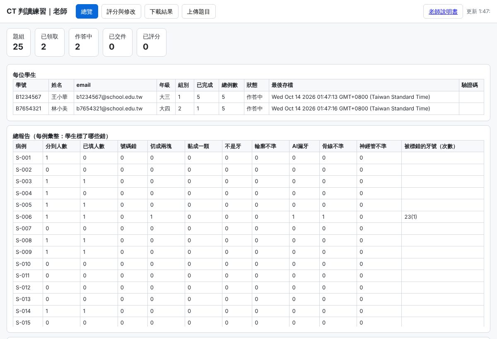
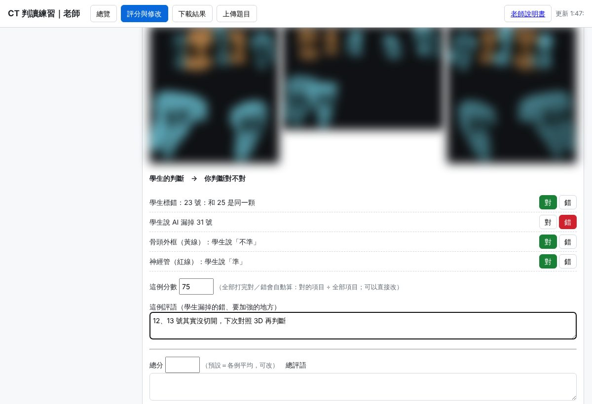
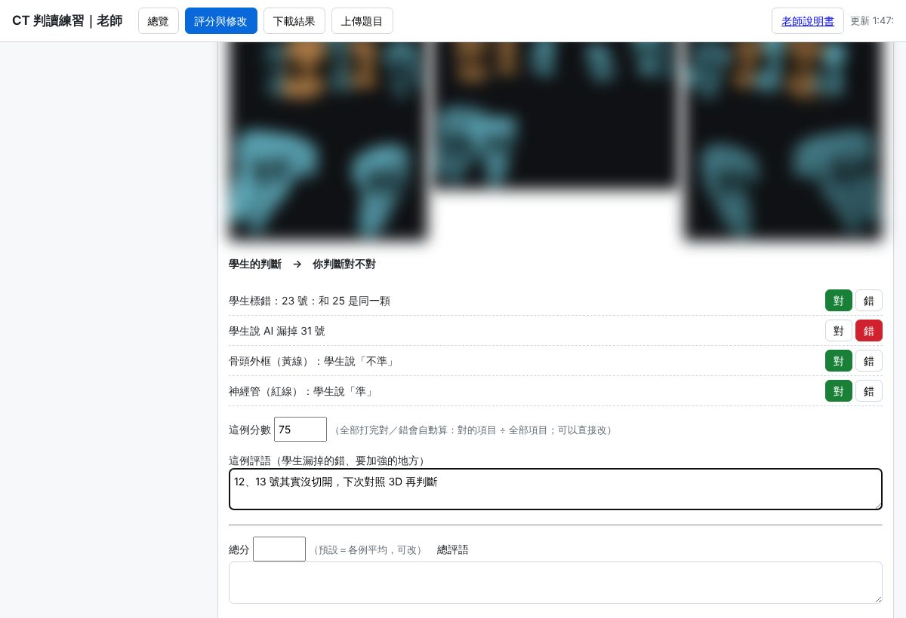
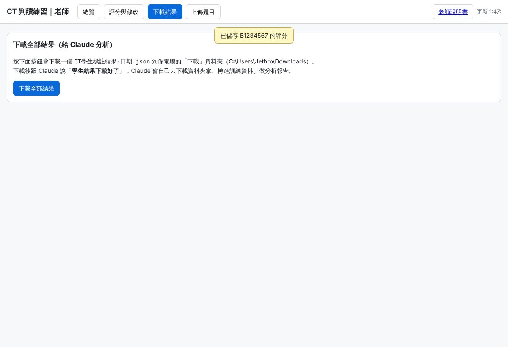

CT 判讀練習｜老師說明書
收件、看進度、評分、修改、把結果交給 Claude｜說明書裡的影像已模糊處理
1. 三個網址
| 學生練習 | index.html（網站首頁）。發給學生的就是這個。不用 Google 帳號。 |
|---|---|
| 老師總覽與評分 | teacher.html?k=老師碼。老師碼只有老師有（Claude 會另外給你），不要給學生。第一次打開後，這台電腦會記住老師碼。 |
| 審閱版 | review.html?k=老師碼。不用登入、不會存檔；可以選第 1–25 組，看到的就是學生那一組的畫面，用來事先檢查題目。 |
2. 發給學生
訊息範本：
「CT 牙齒判讀練習：請用電腦打開（網址），填學號、姓名、學校 email、年級後開始。每人 5 例，約 30–45 分鐘，會自動存檔，全部完成後下載 PDF 交給我。說明書在登入頁的連結。截止：＿月＿日。」
「CT 牙齒判讀練習：請用電腦打開（網址），填學號、姓名、學校 email、年級後開始。每人 5 例，約 30–45 分鐘，會自動存檔，全部完成後下載 PDF 交給我。說明書在登入頁的連結。截止：＿月＿日。」
每人分到哪一組由系統依點開順序分配（先到先分）。共 25 組；超過 25 人時，第 26 人會看到「題組已分完」。
3. 看進度：「總覽」

| 每位學生 | 學號、姓名、email、年級、組別、已完成幾例、狀態（已領取／作答中／已完成）、最後存檔時間、驗證碼（交件後才有）。 |
|---|---|
| 總報告 | 每個病例有幾人分到、幾人填完、各種錯誤被標了幾次、哪幾顆牙最常被標錯。每次有學生存檔就自動更新，頁面每 60 秒重新整理。 |
| 評分紀錄 | 你評過分的學生、總分、各例分數、評語。 |
| 試算表 | 同樣的資料也在雲端資料夾的試算表「總覽與總報告」（要用你的 Google 帳號開）。 |
4. 評分與修改：「評分與修改」


| ① 選學生 | 左邊點一位學生。 |
|---|---|
| ② 逐例看 | 上方「第 1 例…第 5 例」切換。環景圖上紅框＝學生標錯的位置；下面有 3D 可對照。 |
| ③ 逐項打對／錯 | 學生的每一個判斷（標錯的牙、說 AI 漏掉的牙、黃線紅線準不準、或「全部正確」）各按「對」或「錯」。 |
| ④ 分數 | 全部打完會自動算這例分數＝對的項目 ÷ 全部項目 × 100，可以直接改。學生漏掉的錯寫在「這例評語」，需要的話手動扣分。 |
| ⑤ 總分與總評語 | 總分預設＝5 例平均，可改。 |
| ⑥ 儲存評分 | 按「儲存評分」才會存。之後可以再打開修改，按儲存就覆蓋。 |
| 退回讓學生修改 | 學生已交件但要讓他改：按右上「退回讓學生修改」，學生重新登入就能改、重新交件（新的驗證碼）。 |
你打的「對／錯」也會變成訓練資料：老師判定對的學生標記，才會拿去修正 AI。
5. 學生填完後，怎麼跟 Claude 說

| ① 下載 | 「下載結果」頁按「下載全部結果」，會存一個 CT學生標註結果-日期.json 到 C:\Users\Jethro\Downloads。 |
|---|---|
| ② 告訴 Claude | 在 CT 對話說：「學生結果下載好了」（要說清楚是哪一批，例如「第一班」）。 |
| Claude 會做 | 到下載資料夾拿檔 → 換回內部病例代碼、只留學號（姓名 email 不進訓練資料）→ 存進標註庫 → 出一份報告 PDF：哪些牙位 AI 最常錯、學生之間一致不一致、你評分的分布 → 用老師判定對的標記修正 AI。 |
| 不用等全部交 | 中途也可以下載，Claude 會先分析已交的。 |
6. 題目與清空（通常由 Claude 做）
| 上傳題目 | 「上傳題目」頁選 Claude 打包好的 cases\S-xxx.json 和 sets.json。Claude 打包時已做個資檢查，影像只有病例代碼。 |
|---|---|
| 正式開始前 | 「清空所有作答與分組」會把測試時的作答、分組、評分清掉（題目保留）。學生開始後不要按。 |
7. 注意事項
① 老師碼和老師網址不要給學生（拿到就能看到全部學生的姓名、email、分數）。
② 雲端資料夾「CBCT辨識考卷資料」不要分享給學生；網站是用你的身分讀寫資料，學生不需要權限。
③ 學生 PDF 只是收據；成績以總覽裡的驗證碼和你的評分為準。
④ 這個網站只有畫面，沒有任何病人資料；病例影像只存在你的雲端，要登入（學生）或老師碼才讀得到。
② 雲端資料夾「CBCT辨識考卷資料」不要分享給學生；網站是用你的身分讀寫資料，學生不需要權限。
③ 學生 PDF 只是收據；成績以總覽裡的驗證碼和你的評分為準。
④ 這個網站只有畫面，沒有任何病人資料；病例影像只存在你的雲端，要登入（學生）或老師碼才讀得到。